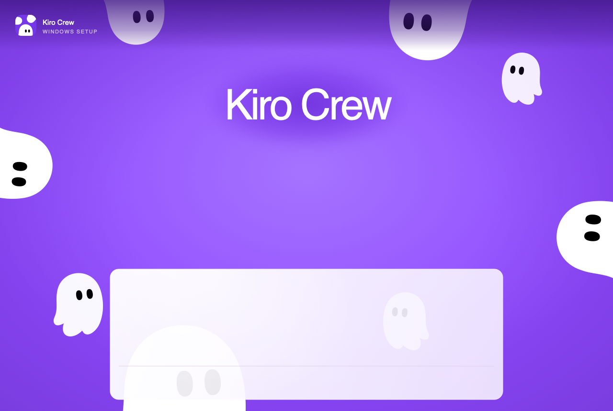

Exit setup ×
Install options
Install for
Only for me (demo.user)
Anyone who uses this computer (all users)
Fresh install for current user only.
Install location
Browse…
Create a desktop shortcut
Start Kiro Crew when Windows starts
Ready to install
Install Kiro Crew
Installing, please wait...
Kiro Crew is ready
Open Kiro Crew
Finish